Honolulu
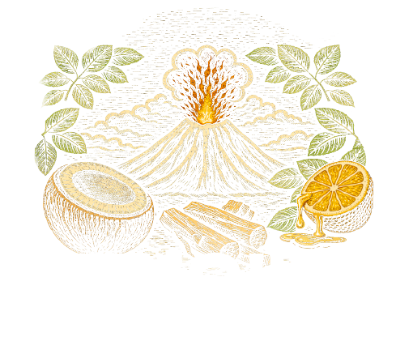
Duo Rhums & Kaffir
Liqueur de coco
Citron, miel
Santal
15€15 cl
Signatures · Sans alcool · Classiques

Duo Rhums & Kaffir
Liqueur de coco
Citron, miel
Santal
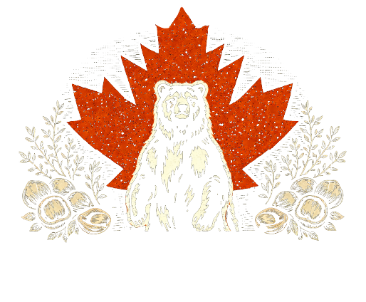
Whisky
« Fatwash » noisette · Sirop d’érable
Feuille de bétel
Bitter thym

Mezcal & Chipotle
Poivrons · Menthe · Citron
Accompagné de poivronnade & nachos

Trio Rhums
Bondamonjack
Cacao / Banane
Passion
Trace de lactose
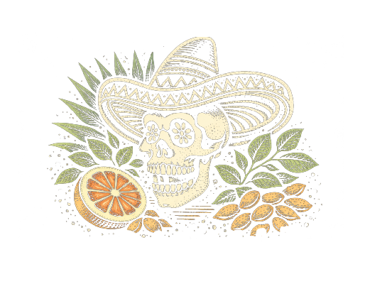
Tequila & Combawa
Pamplemousse
Amande
Gazéifié
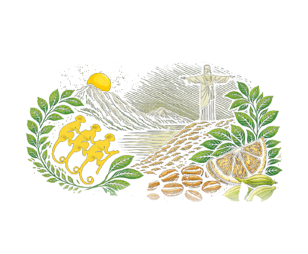
Cachaça
Cardamome · Café
Monkey Shoulder
Citron frais
Gazéifié
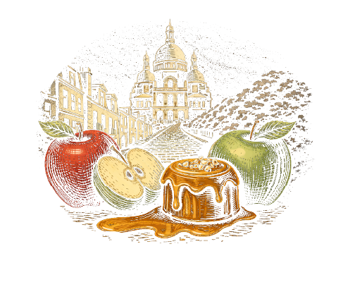
Champagne
Vodka beurre noisette
Sirop caramel salé
Pomme
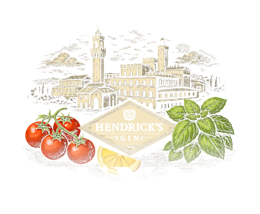
Gin & Paprika
Tomates cerises
Épices secrètes
Citron frais
Trace de lactose
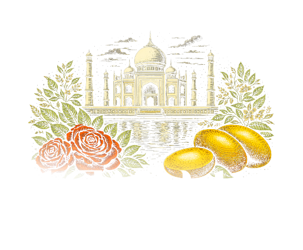
Vodka & Rose
Purée de mangue
Pointe de curry
Kefir
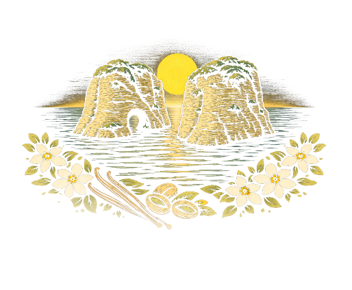
Gin & Pistache
Fleur d’oranger
Crème vanillée
Miel
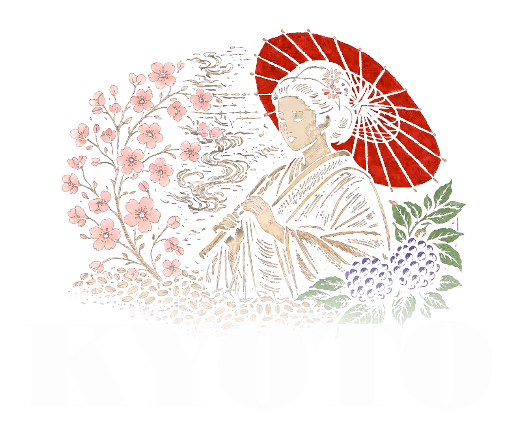
Shochu & Riz torréfié
Mousse genmaïcha
Crème mûre
Vermouth
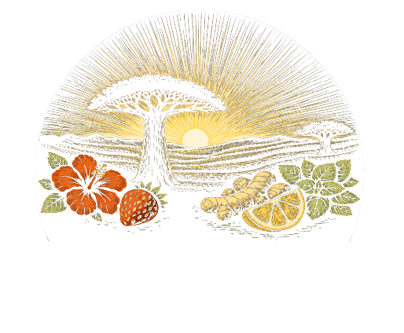
Rhum & Hibiscus
Baie de Voatsiperifery
Gingembre & fraise
Mousse de menthe
Citron
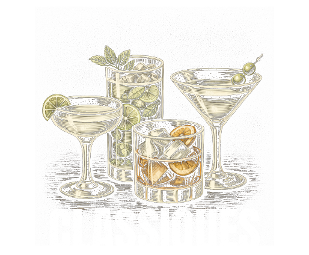
Margarita, Porn Star Martini, Manhattan, Espresso Martini, Negroni, Old Fashioned, Daiquiri…
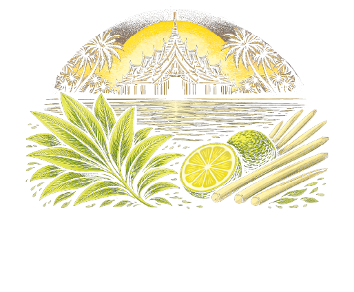
Duo Rhum
Mousse de citronnelle
Sirop de pandan
Citron
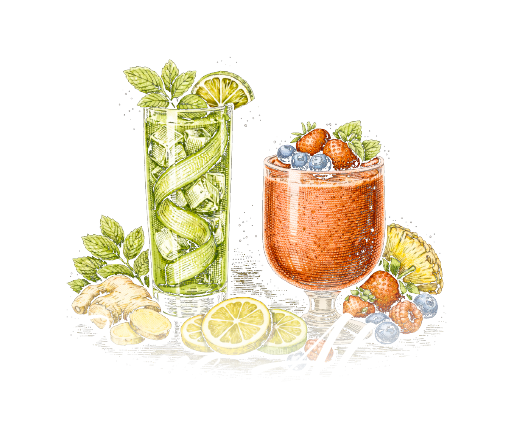
Fruité & acidulé
Fruité & sucré
ou plutôt amer
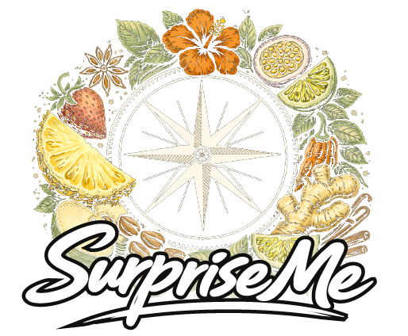
Le barman choisit
selon vos goûts